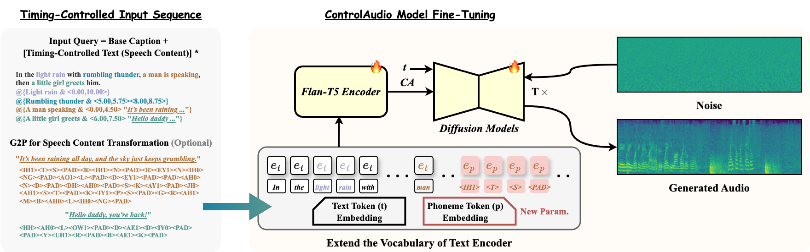
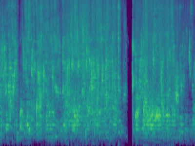

ControlAudio: Timing-Controlled and Intelligible
Text-to-Audio Generation
Anonymous submission
Abstract
Recent advances in text-to-audio (T2A) generation have enabled high-quality audio generation from natural language. As applications increasingly demand structured audio with fine-grained control, precise timing has become essential for controllable audio generation. While previous methods have begun to explore timing-controlled T2A generation, they still lack both precision of control and richness in semantic description. Specifically for speech events, the generated audio often lacks intelligibility and control over its content. In this study, we propose ControlAudio, a timing-controlled and intelligible T2A system for free-form natural language inputs. First, we leverage the reasoning capabilities of a Large Language Model (LLM) to plan the sequence of existing sound events, their temporal spans, and the speech content. We then introduce a structured prompt to encode this information and implement a two-stage pretraining and fine-tuning strategy to achieve a robust mapping from semantic descriptions to their specified timing. Furthermore, to support speech intelligibility, we construct a large-scale synthetic dataset with timing and content annotations, and extend the structured prompt by integrating phoneme-level tokens into the text encoder's vocabulary. Extensive experimental results demonstrate that ControlAudio outperforms previous models on real-world datasets, showcasing significant improvements in timing control, audio quality, and content intelligibility.
Contribution
We propose ControlAudio, a novel timing-controlled and intelligible T2A framework that leverages CoT reasoning with an LLM to plan the sequence of audio events, their temporal spans, and corresponding speech content from free-form natural language descriptions.
We design a structured prompt and adopt a two-stage pretraining and fine-tuning strategy based on these prompts to establish a precise mapping from event descriptions to their temporal spans.
We construct a large-scale synthetic dataset with both timing and content annotations, and extend the text encoder’s vocabulary with phoneme-level tokens, while treating the temporal span of each speech event as its total duration.
We conduct extensive experiments demonstrating that our ControlAudio method outperforms existing methods in both subjective evaluation and objective metrics on multiple benchmarks.
Figure 1: Overview of our CoT-based LLM planning pipeline. Given a user-provided free-form caption, the LLM performs multi-step reasoning to extract audio events with their temporal spans, infer speech content when applicable, and generate a structured prompt that encodes both timing and content for controllable audio generation.

Figure 2: ControlAudio takes structured prompt inputs and jointly fine-tunes the diffusion model and text encoder to achieve precise timing control. To support speech intelligibility, we extend the structured prompts with explicit speech content, augment the text encoder’s vocabulary with phoneme tokens, and introduce a lightweight phoneme embedding module ep.
Timing-Controlled Audio Generation
Text prompt
A bathtub is being filled or washed.
Timing prompt
Bathtub (filling or washing): 0.0s - 6.598s
Bathtub (filling or washing): 6.748s - 10.0s
ControlAudio
AudioLDM
Tango
Stable Audio*
AudioComposer
Ground Truth

Text prompt
A woman sings with music and an alarm clock sounds.